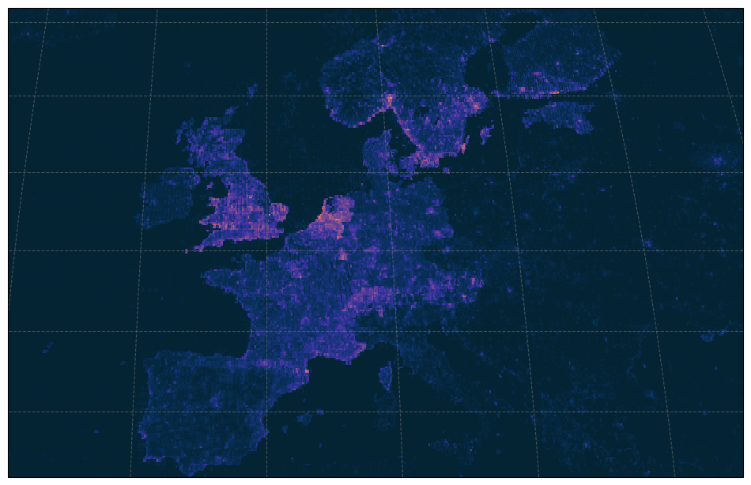

import pystac_client
import planetary_computer
import duckdb
import adlfsAccessing GBIF Parquet data on Azure and AWS clouds using duckdb
Azure
Using Planetary Computer, we can query STAC to access GBIF snapshots on Azure
catalog = pystac_client.Client.open(
"https://planetarycomputer.microsoft.com/api/stac/v1",
modifier=planetary_computer.sign_inplace,
)
search = catalog.search(collections=["gbif"])
items = search.get_all_items()
items = {x.id: x for x in items}
# most recent snapshot (first item)
item = list(items.values())[0]keys = item.assets["data"].extra_fields["table:storage_options"]
AZURE_STORAGE_ACCOUNT_NAME = keys["account_name"]
AZURE_STORAGE_ACCOUNT_KEY = keys["credential"]fs = adlfs.AzureBlobFileSystem(account_name=AZURE_STORAGE_ACCOUNT_NAME, account_key=AZURE_STORAGE_ACCOUNT_KEY )
con = duckdb.connect()
con.register_filesystem(fs)# test with trivial query
df = con.execute(f'''
SELECT *
FROM read_parquet("abfs://gbif/occurrence/2023-02-01/occurrence.parquet/*")
LIMIT 1
'''
).df()
dfCount vertebrate species by class in each .1 degree pixel
query = f'''
SELECT class, longitude, latitude, COALESCE(n, 0.0) AS n
FROM (
SELECT class, longitude, latitude, COUNT(*) AS n
FROM (
SELECT DISTINCT
class,
genus,
ROUND(decimallongitude,1) AS longitude,
ROUND(decimallatitude, 1) AS latitude
FROM read_parquet("abfs://gbif/occurrence/2023-02-01/occurrence.parquet/*")
WHERE (phylum = 'Chordata')
)
GROUP BY class, longitude, latitude
)
'''
df = con.execute(query).df()NameError: name 'con' is not definedimport geopandas as gpd
from geocube.api.core import make_geocube
from geocube.rasterize import rasterize_points_griddata, rasterize_points_radial
gdf = gpd.GeoDataFrame(df, geometry=gpd.points_from_xy(df.longitude, df.latitude), crs='epsg:4326')
geo_grid = make_geocube(
vector_data=gdf,
measurements=['n'],
resolution=.1,
rasterize_function=rasterize_points_griddata,
)import cartopy.crs as ccrs
import matplotlib.pyplot as plt
subplot_kws=dict(projection=ccrs.Robinson(),
facecolor='grey')
plt.figure(figsize=[12,8])
p = geo_grid.n.plot(cmap='viridis',
subplot_kws=subplot_kws,
transform=ccrs.PlateCarree(),
add_labels=False,
add_colorbar=False)
p.axes.gridlines(color='grey', alpha=0.5, linestyle='--')
p.axes.set_extent([-19, 35, 30, 66], crs=ccrs.PlateCarree())